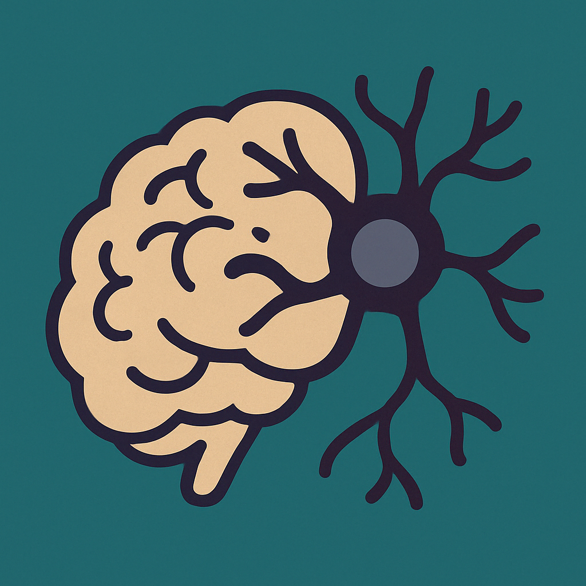

Notebook secondo anno
Esplorando culture, società e... cosa ci rende umani

Dentro la mente, quando l’equilibrio si rompe
Il lato pratico: diagnosi, supporto e (inizio) terapie
Psicologia clinica
Dalla diagnosi alla relazione terapeutica: i primi strumenti clinici.
Vai al NotebookPsicologia dello sviluppo avanzato
L'evoluzione della mente, oltre l'infanzia e l'adolescenza.
Vai al Notebook
Crescere non è (solo) una cosa da bambini. Approfondimenti
L'inconscio bussa alla porta. Freud & co
Come "misurare" l'inconscio? Test e colloqui
Ritorno alle basi, ma con molta più complessità
Tecniche di raccolta e analisi dei dati
Domande, dati e un po’ di statistica: tutto torna (forse).
Vai al Notebook
Numeri, numeri ovunque! Ma (si spera) con un senso